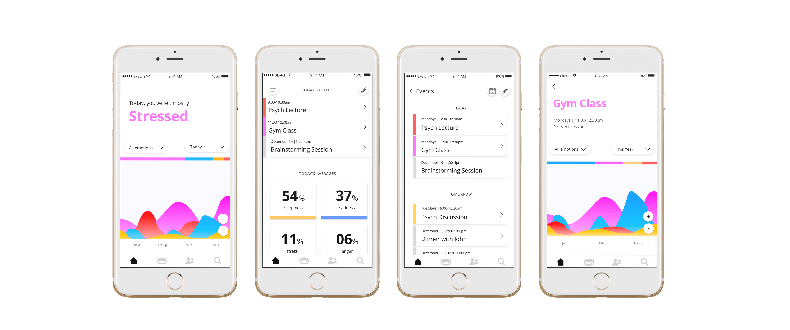
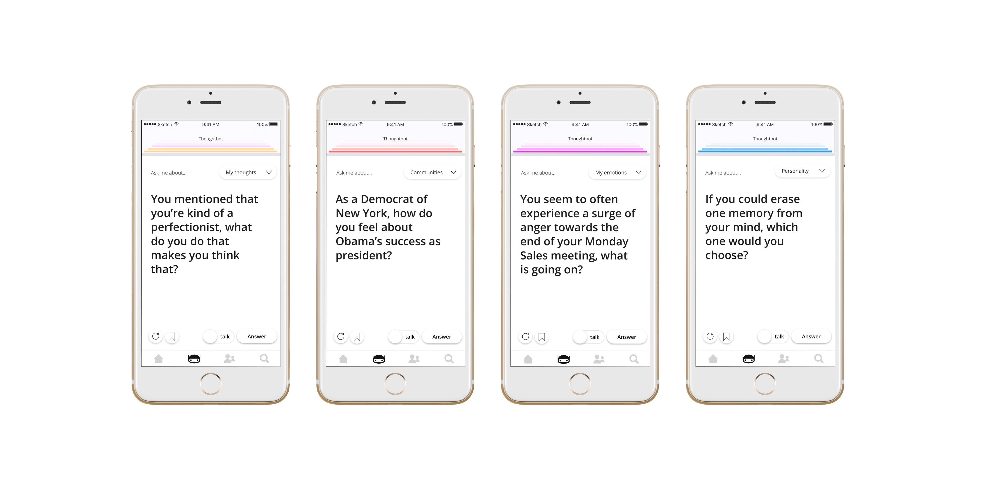
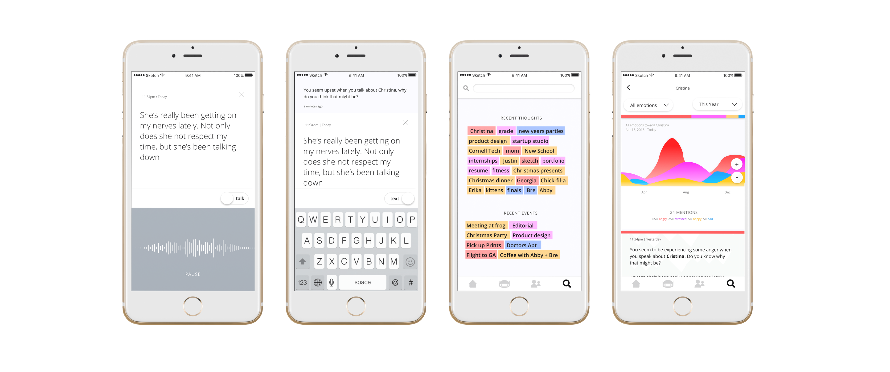

Soul App
UX/UI
The 'fitbit' of thoughts and emotions, soul combines a sentiment-analyzing wristband and a machine learning chatbot to give the modern man a self awareness boost.
Soul promotes mental & emotional health by providing a personal, afforable space for users to explore their thoughts and emotions.
Using bio-signals, the wristband perceives the wearer's joy, anger, sadness & stress levels.
The chatbot or, "thoughtbot", then prompts the user with discussion questions based on their recent emotions, calendar events or discussions.
Color takes the spotlight in the design, signifying each emotion.
The user is greeted with their emotion trends on the home page. From there, they can view how they were feeling during specific time periods or 'events'.
For convenience, the user would be able to sync to popular calendar apps such as Google or Apple Calendars.

Though always available for chatting, the thoughtbot would push notifications to the user when they experience intense or unusual emotions - so that it can be used when the user needs it most.
They can choose from 4 genres of questions: Emotions - based on recent emotions and events, Thoughts - based on recently discussed topics, Community - submitted questions by the communitites the user has joined and Personality - based on self development principles.

During each session, the emotions felt by the user are tied to the topics the user was discussing. The user then has the luxury of tracking their sentiments about different topics over time.
The average of these sentiments form a 'dominant emotion' that then give topics and events their colors on the 'search' page.
The user may speak or text responses but they may not delete any part of their responses; there is no backspace button. While this may frustrate at first, the intention is to prevent the user from
self-editing in order to reveal their genuine thoughts and feelings.
